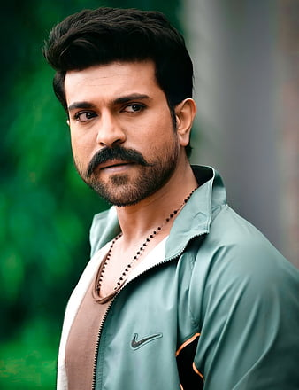
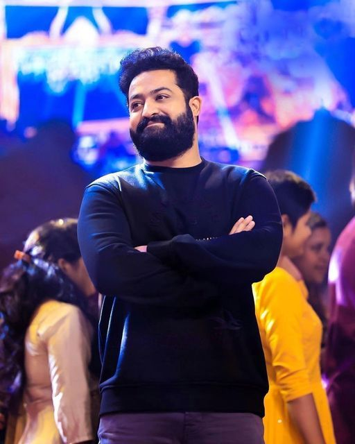
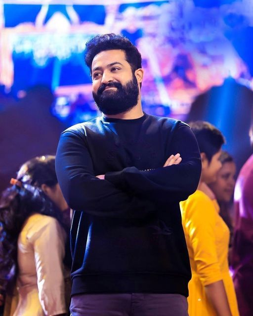
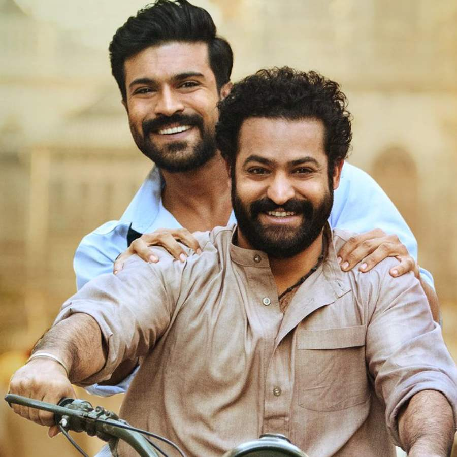
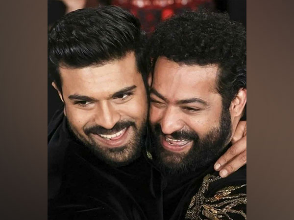

Konidela Ram Charan (born 27 March 1985) is an Indian actor and film producer who primarily works in Telugu cinema. He is one of the highest-paid actors in Indian cinema and has featured in Forbes India's Celebrity 100 list since 2013. Charan is the recipient of several awards, including three Filmfare Awards and two Nandi Awards.Charan made his acting debut with the action film Chirutha (2007), a box office hit, winning the Filmfare Award for Best Male Debut – South. He rose to prominence starring in S. S. Rajamouli's fantasy action film Magadheera (2009), the highest-grossing Telugu film of all time at the time of its release, winning the Filmfare Award for Best Actor – Telugu. He went on to star in notable films such as Racha (2012), Naayak (2013), Yevadu (2014), Govindudu Andarivadele (2014), and Dhruva (2016). Charan achieved further commercial success with the blockbusters Rangasthalam (2018), winning his second Filmfare Award for Best Actor – Telugu, and RRR (2022), which currently ranks as the third-highest-grossing Indian film of all time and his highest grosser. Charan emerged as a pan-Indian star with RRR and earned international recognition, including a nomination at the Critics' Choice Super Awards for Best Actor in an Action Movie.

Nandamuri Taraka Rama Rao Jr. (born 20 May 1983), popularly known by the initialism Jr. NTR, is an Indian actor who primarily works in Telugu cinema. He is one of the highest-paid actors in Indian cinema and has been featured in Forbes India's Celebrity 100 list since 2012. Referred to in the media as the "Man of the Masses", he has appeared in over 30 films. He is a recipient of several accolades including, two Filmfare Awards, two Nandi Awards, and four CineMAA Awards. Grandson of Telugu matinee idol, N. T. Rama Rao, who was also the former Chief Minister of the Indian state of Andhra Pradesh, Rama Rao appeared as a child actor in works such as Brahmarshi Viswamitra (1991), and Ramayanam (1997), the latter winning the National Film Award for Best Children's Film for that year. He made his debut as a lead actor with Ninnu Choodalani (2001). He achieved his breakthrough with the coming-of-age film Student No. 1 (2001) and the action drama Aadi (2002). He went on to star in other commercially successful films such as Simhadri (2003), Yamadonga (2007), Adhurs (2010), Brindavanam (2010) and Baadshah (2013). Following a brief setback, he made a career comeback with the 2015 action drama Temper. Further commercial successes came with Nannaku Prematho (2016), Janatha Garage (2016), Jai Lava Kusa (2017), Aravinda Sametha Veera Raghava (2018), and RRR (2022).
 

RRR (subtitled onscreen as Roudram Ranam Rudhiram) is a 2022 Indian Telugu-language epic period action drama film directed by S. S. Rajamouli, who co-wrote the film with V. Vijayendra Prasad. It was produced by D. V. V. Danayya of DVV Entertainment. The film stars N. T. Rama Rao Jr., Ram Charan, Ajay Devgn, Alia Bhatt, Shriya Saran, Samuthirakani, Ray Stevenson, Alison Doody, and Olivia Morris. It is a historical fiction film about two Indian revolutionaries, Alluri Sitarama Raju (Charan) and Komaram Bheem (Rama Rao), their friendship, and their fight against the British Raj. RRR received universal critical acclaim for its direction, screenwriting, cast performances, cinematography, soundtrack, action sequences and VFX. The film was considered one of the ten best films of the year by the National Board of Review, making it only the seventh non-English language film ever to make it to the list. The song "Naatu Naatu" won the Oscar for Best Original Song at the 95th Academy Awards, making it the first song from an Indian film, as well as the first from an Asian film, to win in this category. This made the film the first Indian film by an Indian production to win an Academy Award. The film became the third Indian film and first Telugu film to receive nominations at the Golden Globe Awards, including Best Foreign Language Film, and won Best Original Song for "Naatu Naatu", making it the first Indian (as well as the first Asian) nominee to win the award. RRR also won the awards for Best Foreign Language Film and Best Song at the 28th Critics' Choice Awards. At the 69th National Film Awards, the film won six awards, including Best Popular Feature Film, Best Music Direction (Keeravani) and Best Male Playback Singer (Kaala Bhairava for "Komuram Bheemudo").  